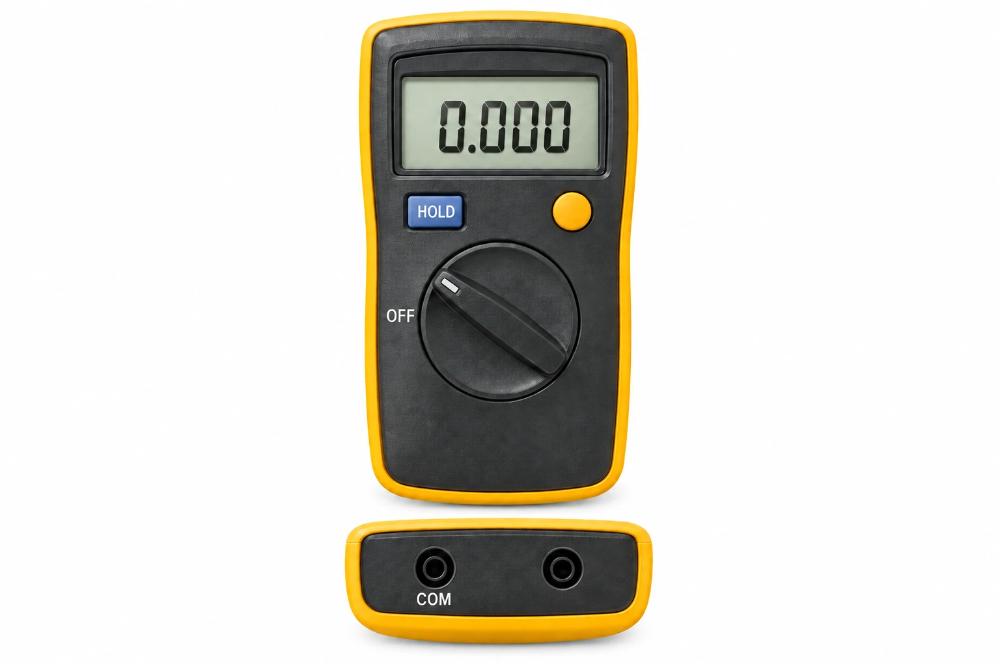
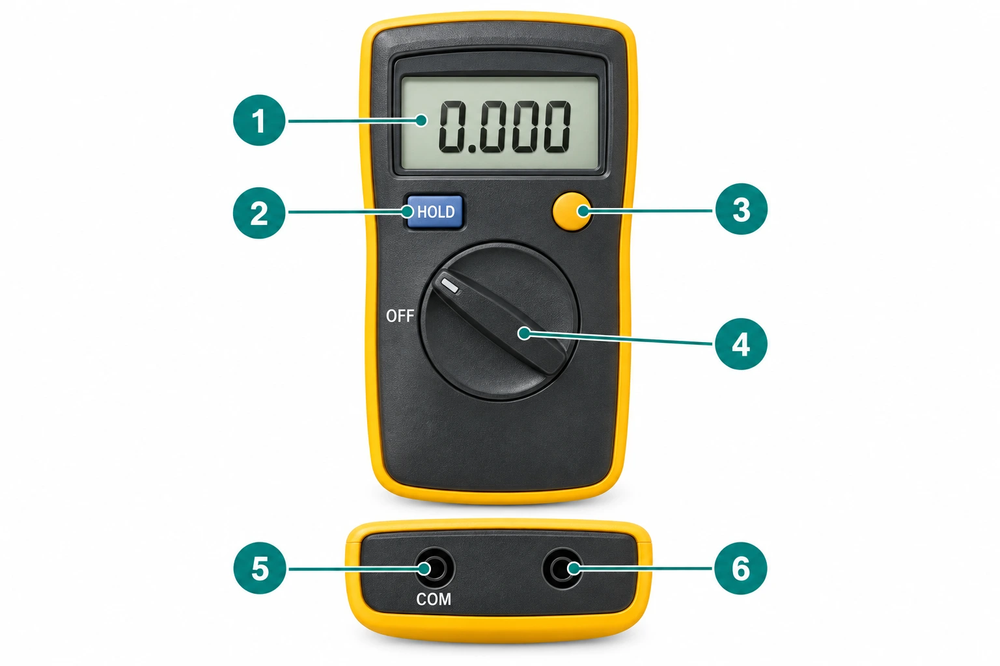
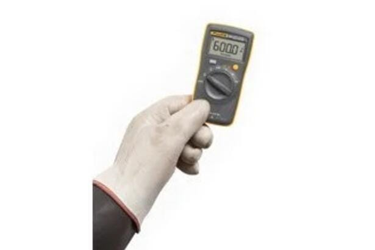

Desde la clase 2: completen estas seis hojas. Elijan el curso y descarguen su PDF listo para imprimir en A4 al 100 %.
La entrega final será en la clase 4. Esta página no guarda respuestas ni recibe archivos.
CENTRO EDUCATIVO SALESIANOS TALCATÉCNICO PROFESIONAL: 2 SUR 1147 – FONOS (71) 2615416 · 2615410BÁSICA y LICEO: 11 ORIENTE 1751 – FONOS (71) 2615454 · 2615457www.salesianostalca.cl – cest@salesianostalca.clTALCA - REGIÓN DEL MAULE - CHILEDepartamento de Lengua y Literatura · NM4 · 2026 · Docente: Francisco Núñez
Unidad 3 · Manual ilustrado · 4°C · Electricidad · OA 5 y OA 6
1. Presentación del equipo
Integrantes del grupo:
1.
2.
3.
Curso:4°C · ElectricidadFecha: / / Grupo:
Objetivo: Elaborar y revisar un manual claro para un principiante, combinando información fiel e imágenes.
Instrucciones: completen estas seis hojas desde la clase 2. Escriban con palabras propias y consulten la fuente. Entreguen en la clase 4. No operen equipos.
Título del manual:
Multímetro digital Fluke 101

Expliquen qué muestra la imagen y cómo ayuda al lector.
¿Para quién y para qué escribimos?
¿Cuál es la función del equipo?
Escriban dos frases propias basadas en la lectura.
EDUCAR EVANGELIZANDO Y EVANGELIZAR EDUCANDO, MEDIANTE UNA FORMACIÓN CONTINUA Y DE CALIDADPágina 1 de 6
CENTRO EDUCATIVO SALESIANOS TALCATÉCNICO PROFESIONAL: 2 SUR 1147 – FONOS (71) 2615416 · 2615410BÁSICA y LICEO: 11 ORIENTE 1751 – FONOS (71) 2615454 · 2615457www.salesianostalca.cl – cest@salesianostalca.clTALCA - REGIÓN DEL MAULE - CHILEDepartamento de Lengua y Literatura · NM4 · 2026 · Docente: Francisco Núñez
Unidad 3 · Manual ilustrado · 4°C · Electricidad · OA 5 y OA 6
2. Partes y funciones
Grupo:Integrante de referencia:
Observen el plano y completen las seis partes. Es un esquema sin escala, no un plano de instalación.

N.º
Nombre de la parte
¿Qué función cumple?
1
2
3
4
5
6
¿Cómo se relacionan dos de estas partes?
Respaldo en la fuente
Anoten el manual y la página o sección que consultaron.
EDUCAR EVANGELIZANDO Y EVANGELIZAR EDUCANDO, MEDIANTE UNA FORMACIÓN CONTINUA Y DE CALIDADPágina 2 de 6
CENTRO EDUCATIVO SALESIANOS TALCATÉCNICO PROFESIONAL: 2 SUR 1147 – FONOS (71) 2615416 · 2615410BÁSICA y LICEO: 11 ORIENTE 1751 – FONOS (71) 2615454 · 2615457www.salesianostalca.cl – cest@salesianostalca.clTALCA - REGIÓN DEL MAULE - CHILEDepartamento de Lengua y Literatura · NM4 · 2026 · Docente: Francisco Núñez
Unidad 3 · Manual ilustrado · 4°C · Electricidad · OA 5 y OA 6
3. Indicaciones claras
Grupo:Integrante de referencia:
Reescriban cuatro indicaciones de la fuente. Empiecen con un verbo, nombren la parte y conserven la advertencia.
Indicación 1
Indicación 2
Indicación 3
Indicación 4

Expliquen qué información ayuda a comprender esta imagen.
¿Dónde comprobaron las indicaciones?
EDUCAR EVANGELIZANDO Y EVANGELIZAR EDUCANDO, MEDIANTE UNA FORMACIÓN CONTINUA Y DE CALIDADPágina 3 de 6
CENTRO EDUCATIVO SALESIANOS TALCATÉCNICO PROFESIONAL: 2 SUR 1147 – FONOS (71) 2615416 · 2615410BÁSICA y LICEO: 11 ORIENTE 1751 – FONOS (71) 2615454 · 2615457www.salesianostalca.cl – cest@salesianostalca.clTALCA - REGIÓN DEL MAULE - CHILEDepartamento de Lengua y Literatura · NM4 · 2026 · Docente: Francisco Núñez
Unidad 3 · Manual ilustrado · 4°C · Electricidad · OA 5 y OA 6
4. Seguridad y cuidados
Grupo:Integrante de referencia:
Escriban dos advertencias esenciales
Advertencia 1
Advertencia 2
Escriban los cuidados indicados en la fuente
Cuándo suspender el uso y pedir ayuda
Respaldo de estas indicaciones
Indiquen las páginas o secciones del manual consultadas.
Este trabajo no autoriza a operar equipos. No prueben instrucciones mediante mediciones, soldadura ni conexiones.
EDUCAR EVANGELIZANDO Y EVANGELIZAR EDUCANDO, MEDIANTE UNA FORMACIÓN CONTINUA Y DE CALIDADPágina 4 de 6
CENTRO EDUCATIVO SALESIANOS TALCATÉCNICO PROFESIONAL: 2 SUR 1147 – FONOS (71) 2615416 · 2615410BÁSICA y LICEO: 11 ORIENTE 1751 – FONOS (71) 2615454 · 2615457www.salesianostalca.cl – cest@salesianostalca.clTALCA - REGIÓN DEL MAULE - CHILEDepartamento de Lengua y Literatura · NM4 · 2026 · Docente: Francisco Núñez
Unidad 3 · Manual ilustrado · 4°C · Electricidad · OA 5 y OA 6
5. Consulta rápida
Grupo:Integrante de referencia:
Dibujen una ruta para consultar el manual
Usen cajas y flechas. Ejemplo: «No reconozco una parte» → «Busco su número en la página 2». Agreguen rutas para una duda sobre cuidados y otra sin respuesta. No dibujen un circuito.
Expliquen cuatro términos para un principiante
Consulten el vocabulario de la lectura. Usen palabras propias.
Término 1 y explicación
Término 2 y explicación
Término 3 y explicación
Término 4 y explicación
¿Qué pregunta resuelve esta página?
EDUCAR EVANGELIZANDO Y EVANGELIZAR EDUCANDO, MEDIANTE UNA FORMACIÓN CONTINUA Y DE CALIDADPágina 5 de 6
CENTRO EDUCATIVO SALESIANOS TALCATÉCNICO PROFESIONAL: 2 SUR 1147 – FONOS (71) 2615416 · 2615410BÁSICA y LICEO: 11 ORIENTE 1751 – FONOS (71) 2615454 · 2615457www.salesianostalca.cl – cest@salesianostalca.clTALCA - REGIÓN DEL MAULE - CHILEDepartamento de Lengua y Literatura · NM4 · 2026 · Docente: Francisco Núñez
Unidad 3 · Manual ilustrado · 4°C · Electricidad · OA 5 y OA 6
Ejemplo: «Accione» / «Presiona» / «El principiante entiende mejor la acción».
Cambio 1
Antes:
Ahora:
Por qué:
Cambio 2
Antes:
Ahora:
Por qué:
Comprueben: información fiel y fuentes localizables; escritura propia; imágenes útiles; dos correcciones justificadas. Cada integrante explica una decisión.
Clase 4: entreguen estas seis páginas y el borrador inicial al docente, en papel o PDF por el canal indicado.
EDUCAR EVANGELIZANDO Y EVANGELIZAR EDUCANDO, MEDIANTE UNA FORMACIÓN CONTINUA Y DE CALIDADPágina 6 de 6